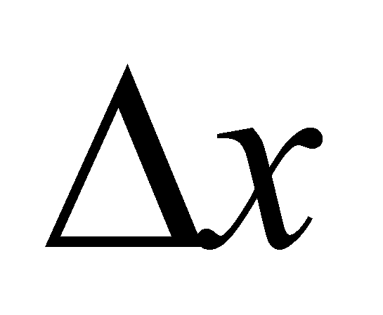
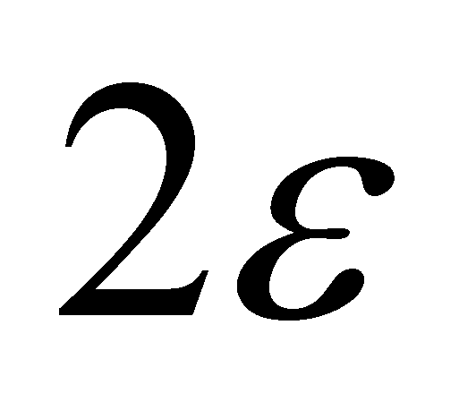

|
|
|
While according to the mathematical analysis there is a function f(x) on a continuous domain of a variable x, according to the objectual philosophy, it is a primary distribution f(x) (considered as continuous under the specific meaning of this paper) on a realizable support domain (discrete) {x}. The primary distribution has a singular value of the dependent attribute as its local element, assigned to a singular support value by means of a local relation. This local element is the equivalent of a function value in a point, according to the classic mathematics.
The primary distribution f(x) can have (if it is uneven) some derived distributions of different ranks. The local elements of these distributions are made-up from a finite and linear variation (of a certain rank) of the dependent attribute, assigned to a variation x by means of a local relation, x which is the same in terms of the amount, regardless of the distribution rank. These local elements are the equivalent of the relations X.3.2.2.3 and X.3.2.2.4, provided that to be however less but not under . The invariant density of the linear distribution on an element of derived distribution is under these circumstances the equivalent of the local derivative from the classic differential calculus. Attention! This density is assigned to an interval (which can be referred to as an object through its internal reference xk from the primary distribution f(x)). Therefore, according to the objectual philosophy, the derivative of a function cannot exist only on a singular value (the derivative equivalent in a point from the classic differential calculus. If you have carefully read chapter 4 where the processual classes of objects have been presented, you could also find out in this way that a primary distribution element (the equivalent of the function value in one point) is an object belonging to the processual class S0, whereas the density of a derived distribution element (the equivalent of the local derivative) is an object from the processual class Sn (where n is the rank of the derived distribution).
Copyright © 2006-2011 Aurel Rusu. All rights reserved.